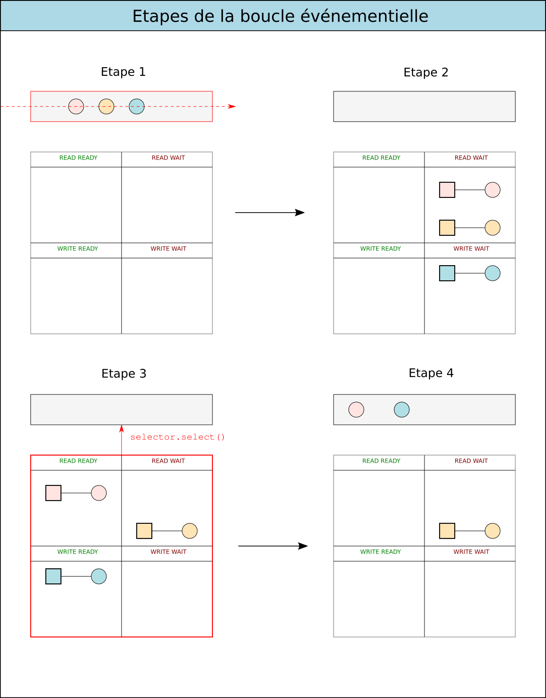

def fib(n): """Compute n-th Fibonacci number""" if n <= 1: return n else: return fib(n-1) + fib(n-2)
(defun fib (n) "Compute n-th Fibonacci number iteratively" (defun fib-iter (a b n) (if (= n 0) a (fib-iter b (+ b a) (- n 1)))) (fib-iter 0 1 n)) (fib 10) ;; returns 55
La fermeture de la connexion est à l'initiative du client.
Code : fibservsync.py
Client rapide
Client lent
Idée : Utiliser différentes combinaisons de ces clients pour évaluer les performances du serveur
Code
fibclientslow.pyfibclientfast.pyEt les alternatives qu'on va explorer illustration
def run_server(host='127.0.0.1', port=5000): s = socket.socket() # ... s.listen(5) while True: conn, addr = s.accept() # Blocking print('Connection from {}.'.format(addr)) # Handle client in a separate thread, # and go back to listening. Thread(target=handle_client, args=(conn,)).start()
(illustration sélecteur)
-def run_until_complete(tasks): while tasks: # Fetch next task from the beginning of the queue coro = tasks.popleft() try: # Advance task one step, until next 'yield' next(coro) except StopIteration as exc: # The task finished, and its return value is # retrieved from the exception. print('Scheduler: task returned', exc.value) continue else: # Put the task back at the end of the queue tasks.append(coro)
La boucle événementielle (event loop) :
Illustration 
Pas le temps, il faut vraiment que j'aille me coucher…
{kind=link}
{kind=link}